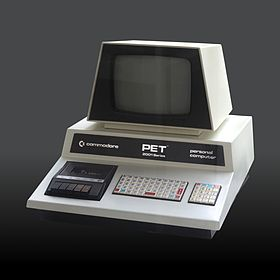
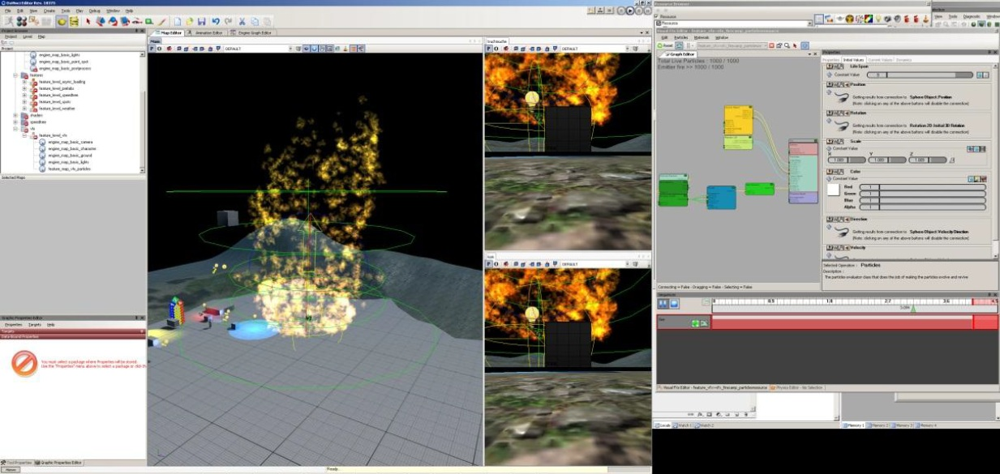
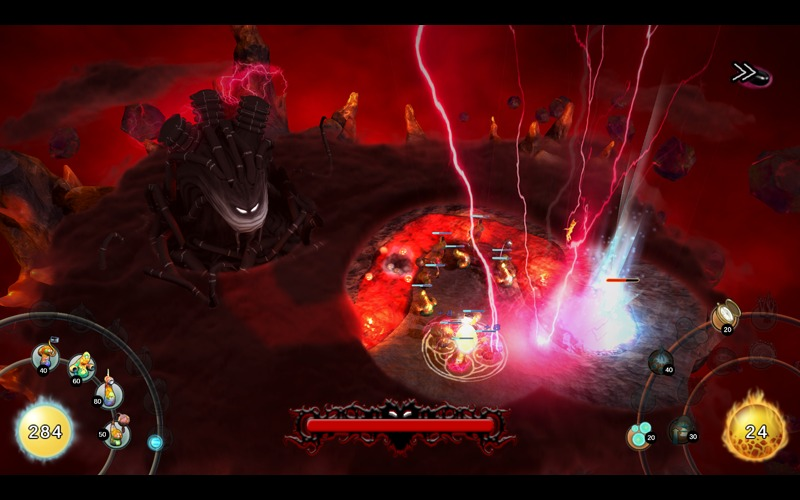

About Patapom

Inception
I was born in 1975, at the time personnal computers were only a dream. An expensive one too.
I can't say I fell in love with computers as soon as I was born, but not very far from it.
It all began when I was 6, at the computer club of the small town where my mother took some initiation courses encouraged by the French national education system (she was a school teacher).
They had nice Commodore Pets at the club (I still have one in my room that I keep as a memento by the way), I quickly managed to learn basic commands to run games. I was hooked in less than 3 minutes. I knew what I wanted to do with my life: press buttons!

After pissing my parents off with me wanting a computer, I finally got the ultimate toy. The one you never get tired of. The one that lets you accomplish miracles without having to leave your home. The one that solves all problems. The one that helps you create worlds and universes. The one that transforms you into a God !
Since then, I've never stopped writing graphics-oriented programs. I first started to learn Basic when I was 9 (did a nice animation of a dog taking a piss on a lamp pole by writing ASCII characters in a notebook before copying them as a program).
Much later I learned the MC68000 assembler because I needed a lot of speed to make the entire screen scroll 50 times per second. If you got an Atari ST, you know what I mean. 
Finally, even later I learned C then C++ and entered college after somewhat mitigated grades.
I was not a bad student but I was always so distracted, only paying attention to math and physics when it could bring me some knowledge about how to rotate that 3D object, totally uninterested when it talked about other subjects that had no physical or geometrical representations. Or subjects I decided had no intrisic value regarding my computer quest, like history, literature and philosophy.
I was totally wrong of course, and now I'm even a big buff on these subjects that I find equally fascinating.
Anyway, if I had to choose between writing code for a demomaker competition or studying for an exam in the morning... Well... Guess what ? 
Poor Misunderstood Patapom
I left college at 23 because it... didn't feel right. I'm not saying I felt persecuted or anything but... a little bit anyway.
It especially felt that way when I realized what I still consider today as a very nice piece of software for an assignment in fluid mechanics: this little software let you model any kind of 2D network of pipes, changing their diameter and everything.
If featured a modeler, a computation module and a very nice viewer that showed you a rotating 3D view of the diagram of pressures and velocities as a vector field that
I had represented using the Linear Integral Convolution algorithm.
I was very proud to have digged that algorithm out from a Siggraph 93 paper I got by stealing the library card from a friend of mine who was writing his thesis at the time (I was only 20 and in the early years of college, students like me didn't have access to the highly specialized sections of the library).
Anyway, after showing the result to the teacher, poor me only got a 13/20 because the software was not entirely complete (still lacking the representation of the array of velocity divergences). On top of that, I saw many of my fellow students getting the perfect mark (20/20) just because they printed out in text mode exactly the array of results required by the teacher, with the exact pipe as specified in the exercise (a simple large pipe reducing its diameter, that was the assignment).
Useless to say that I was a bit disappointed by the result, realizing that I would never be the one good student complying exactly to the assignments (it was not the first time I witnessed that kind of behavior, i.e. favoring compliance and exact application of assignment, no more no less), realizing that curiosity and initiative were not rewarded and encouraged as I had always believed was the point in science and research.
I'm 37 now, I'm big enough to admit I was not a knight in shining armor, I had my flaws too of course (I could be a cocky little bastard sometimes ), but that story is no figment of my imagination either.
There is too much awesomeness in us, it burns !
After that episode, I accepted the offer to come and work with a group of friends in Lyon (where I'm still living nowadays BTW), the company was called Dôki Denki and we were working on a super-awesome-generic-coffee-making-atom-smashing-3D-engine named "Irion". It was trendy at that time for many companies to create their own "generic-multi-platform 3D engine" that would revolutionize the world of video games. And we all believed that we were the chosen ones, no doubt about that !
Obviously, it was a complete failure.
We had by far too little experience to embrace such a large project, but we thought we knew everything nonetheless. Now, after all these years, the only thing I truly know I know is that I know nothing !
(but at least, I know that I know that ! )
We were learning C++ at the same time we were writing the code we believed was awesome. We were discovering and abusing design patterns. We put factories of subscribers ev'ry-where ! And it was a disaster to learn/teach/debug/use.
What I learned from these dark days is that it's difficult to create simple software. Simple to use, simple to write, simple to understand, simple to maintain.
All this is essential and we lost sight of the ultimate goal a computer is supposed to provide to its users: simplicity !
It's supposed to make your work easier, not complicate it. And this is an axiom, it must always be true or else, immense doom will fall on you and your family !
It's my belief that these dark times of over-complexification occurred everywhere in the world at about the same time (say 1999-2002), mainly because many young coders were coming of age and started their career by learning C++ at the same time they were working on their main project.
It happenned at Blizzard games as told by Patrick Wyatt in his excellent series of articles about the making of Warcraft.
As an archeologist would do with dusty pottery, I witnessed it first hand working for Autodesk and examining pieces of code dating from this strange period.
Tales of such nature have been told all over the world... Rare are those elite few who had the clairvoyance to avoid the traps of what I would call "the complexitude".
The Disney Channel
After the Irion team split, we were only 2 from the original team of 7 to stay at Dôki Denki and we started to work on real games this time!
It was a bit less inspiring than the jobs we had in the "R&D department" with Irion but I'm proud to say I find joy in my work whatever I get to do (except really nasty stuff like cartdrige save slots on PSX, a man has his pride!)
We created several games for Disney:
I wrote the main tool for creating the levels in Piglet's Big Game but I also wrote NPC behaviors for Peter Pan. I really enjoyed writing AI by the way ! 
Failed Projects
Not really concerned with the internal mechanisms of the company at the time, I didn't notice we started to get a little too confident. The company was about to be introduced on the financial market and we were exploring various other media like film and CGI animated series.
That's how we got to work on a demo of the Dragon Hunters licence, that demo was really fun to work on! I got to write the AI for various dragons, wolves and some stupid caterpillar that rolled and attempted to crush you if you stayed on its path.
I had a lot of fun writing the behavior for the large bubble dragon! It spit fire and set the ground on fire with his breath. I had plenty of ideas for that dragon often turned down by the game designers, but some of them were accepted.
For example, when the dragon jumped, it applied impulses to physical objects all around him (more or less strongly depending on their distance), it created an awesome sense of heaviness when you saw all the tiny pebbles and rocks jump in the air at the moment the dragon landed on the floor! (accompanied by a slight camera shake, that was perfect!)
Also, for his death, since the dragon looked like a balloon, I had the idea to make it deflate as such. It was of the highest comical effect seeing this dragon take off in a madening path until it disappeared from sight (I always arranged to make it disappear behind the camera).
Useless to say I would have taken a lot of pleasure working on that game but the demo proposal was rejected by the sponsor. Instead, the company decided to buy the Moto Racer licence from Delphine Software and we started to develop a new title called "Moto Racer Traffic" where the first level took place on a huge track in New York City.
I wrote a plug-in for 3DSMax that precomputed the lighting of the entire New York city model using spherical harmonics, it was in 2003 so not even a full year after the paper of Peter Pike Sloan introducing PRTs to us mere mortals, no use to say I was very proud of this since we were certainly one of the first companies to have a fully dynamic daylight cycle with global illumination on an entire city!
I also wrote my first post-process on PS2 to be able to display my HDR spherical harmonics lighting on the PS2, it was using some clever tricks and we really got ourselves a nice rendering!
So, as is normally the case with such apparent success, the company closed down.
That's when I learned it doesn't take much for a company, even a 10 years old one, to go under. It only burns down to 1 (one!) project remaining to sustain the entire staff, and for that project to be discarded by the editor.
And that's exactly what happened.
Cowardly Fleeing to England
I courageously decided to migrate to a friendly country: the United Kingdom. Unfortunately, not to the best part of it since I foolishly decided to go to Portsmouth. And regretted it immediately...
The job at Climax was really nice, kind in the continuity of what I had started at Dôki Denki: I was supposed to develop a framework of tools on top of a postgres database containing the game assets. (it was another trend at the time: after design patterns, people discovered databases!)
What was wrong was the place. I couldn't stand it... It felt and looked horrible for some reason. So after 7 months of resisting the urge to jump in the sea and swim accross the channel, I finally came back to Lyon sobbing and jobless.
It was a terrible experience overall and it deeply affected me because I really believed I was doomed to stay in France, apparently being intolerant to other countries, even countries I thought I loved like the UK. BTW, I really love the UK! (just not Portsmouth )
Minimum Wage
Since I bravely quit my last job (the one at Dôki Denki) rather than waiting to be fired, I couldn't claim any revenue due to unemployement (in France, you can get paid a part of your former salary during a relatively long period of time until you find another job).
I was only entitled to get minimum wage, which I didn't even bother to claim, living on the savings I had from my job in the UK.
That was kind of a dark time for me in term of job opportunities, but not for personnal creativity and free time. It's at this time I realized the importance of having time for yourself, time to develop your own projects and not just work for other people's.
I believe it was at that time I changed my philosophy of life and centered myself about the creative process rather than the desperate run after jobs. That's why I resisted the urge to postulate for a new job and even turned down some proposals. And I think that's why I'm free lancing now and prefer to keep it that way.
Widescreen Games
Anyway, you can't live on love and fresh water as we say in France. At some point, I got a job from the now deceased Eden Games. I was supposed to start on a monday morning as a script programmer for NPC behaviors. Not my usual cup of tea, kind of low expectations on that one. After all, my speciality was tools and rendering...
So I arrived at Eden that monday morning at 9 AM sharp and told them I quit.
Then I left the building and entered another building right across the street where their "rival company" Widescreen Games was located.
Indeed, I had my interview with Eden on a friday and was due to start working the next monday. But people from Widescreen contacted me during the week-end and had me convinced to work for them instead: they had a very nice position for me in their R&D department, working on the 3D engine and tool chain. Exactly what I was looking for!
I felt sorry for Eden so I went there in person to decline their offer rather than sending an impersonal e-mail. On the other hand, I couldn't let myself be miserable in a job just to be correct vis-à-vis some (yet unsigned!) agreement.
So here I went, developing a very nice toolchain and rendering tool called Da Vinci of which I'm still proud today. It had nothing to be ashamed of (except perhaps its appearance) compared to the existing version of Unreal or Source engine at the time! A little shame compared to the CryEngine, alright, but we would have caught up on those bastards at some point!
My team and I had produced a terrific amount of work and some very great tools.

Unfortunately, no game was ever produced with it. All the projects we were given got canceled at some point due to that eternal "video game crisis". It seems that "crisis" never stopped, after all I've been in the video games business 10 years and I can only claim 3 published games although I've been busy during all this time...
That was also the case for our very last project (a conversion of The Witcher for the XBox360 and PS3) that got scrapped, and the company with it!
Anyway, the 5 years I spent at Widescreen Games were really great, I'm a bit sad so much work got tossed away and nothing came out of it but that was a great technical as well as human experience after all.
The DaVinci team split, some went to Ubi Soft in Montpellier or Montréal, others went to Arkane Studios, a Lyon-based company now very well known for their great game Dishonored.
3D? In a web page? Seriously??!!
I decided to try some projects of my own. It was 2009 and Google had recently released their O3D technology. It allowed the programmer to display 3D scenes in the web browser. It was a pretty good renderer, complete with a scene graph and shaders (SM2.0).
And it was Google! It had to work! It was not foolish to bet on that technology at the time, so I started delving into javascript and the web, an unfamiliar subject for me. And that was awesome! Javascript is the best language EVER!
In the course of the 6 months following the demise of Widescreen, my friend Gaël and I managed to create a nice virtual visit of the Saint Jean Cathedral of Lyon (now available in WebGL here) and a complete game called "Asterocket" (coded in exactly 1 month!) where you frantically jumped from planet to planet, shot rockets at monsters and used a grappling hook to navigate.
Then we started to realize the harsh reality of 3D in a web page: apart for gaming, it's completely useless!
Moreover, Google started to get disinterested in their own technology and we could feel a lack of interest from the developpers' community as well: it was not yet the time!
Although O3D didn't receive the expected praise from the developpers' community (which I can understand since it was quite hard to handle), it was not a stupid idea because 3 years later WebGL is arriving and starts taking off pretty seriously.
Except the main problem is still there: there's no real application for 3D in a web page.
By the way, I still prefer O3D over WebGL since O3D and its scene graph took care of the draw calls and scene management leaving javascript with only AI and game/camera mechanics. With WebGL, you have to post your draw calls, manage your animations and your AI and game mechanics, all this in javascript; that's why I doubt really complex games will come out of WebGL any time soon, even with the great V8 engine in Chrome!
Free Lancing
Leaving O3D and the World Wide Web, I got contacted by Allegorithmic, a Clermont-Ferrand-based company specialized in procedural textures now quite well known for their Substance technology existing in Unity, 3DSMax, Maya and Flame.
I wrote the first version of the integration of Substance in Unity. That's the first time I got familiar with Unity. Pretty intimately familiar if I might say, since I took a look not only at the scripting part but also the engine and editor sources (it was necessary to handle the new Substance file type correctly).
Later, Allegorithmic got contracted by Autodesk Montréal to realize a new line of tools (the Flame FX) for their famous software called Flame. So they sent me to Montréal for 6 months...
Remember my bad experience in Portsmouth, when I said I believed I was doomed to stay in France forever because I didn't like other countries? Well... I'm cured!
Montréal was awesome!
People are great, the air is great, the food is... hmm... okay..., the city is great and I really felt my heart tear a little when I had to come back home.
As for my time at Autodesk, I can say that was hard. They are all very experienced people and I had a lot of pleasure to work with them, but they clearly don't have the same expectations as in the video games industry!
You know that pixel that slightly flickers every 17 frames? Yeah, the one you said it didn't matter, it won't be noticed. That pixel. Well, when you work on a professional video processing software, that pixel has to go! You better have to get your shit right mister!
Nonetheless, I created the "Gradient" tool, I upgraded their existing "Glow", "Defocus" and color grading tools, created a "Deform" tool to distort the image and also a "Blending and Compositing" tool with many fancy blending modes (usually the same as Photoshop) and even some I didn't even know existed.
That may not look like much work done in 6 months but let me tell you it's a huuuuge amount of work given the dev environment (a custom build of RedHat5), knowing that to create a simple button you needed to edit a text file, place the button manually by writing its position and size, compile and (hopefully) launch 5 minutes later to know if your button was correctly placed! (compared to what I'm used to, C# and WinForms where you drop a button and double-click it to edit the code, you can understand at some point I became quite mad )
I sell clouds
I know when not to overstay my welcome, my time with Allegorithmic was over and I had to sail toward other bright horizons. That's when I had the opportunity to work with old friends from Dôki Denki on a tower defense game called Shad'O.
That was ideal: I had now almost become an expert with Unity and started to have quite an experience with volumetric rendering through my experiments with my Nuaj' renderer.
And the guys from Okugi Studio needed a volumetric fog for their game, some kind of "fog of war" that would cover the game board and prevent the player from seeing the coming enemies unless he carefuly placed some towers.

After developing that fog, my friend Guillaume convinced me that I should pursue Unity development, that it lacked some nice clouds package. Indeed, at the time the only cloud packages available were still the usual particle-based renderers, nothing new since the Dobashi paper of 2000 later made popular by the implementation from Mark Harris.
So that's how I decided to start Nuaj', the volumetric clouds renderer package. Complete with HDR rendering, 3D textures and multiple render targets (none of these being available in Unity at the time, I had to invent some seriously crazy workarounds!).
It took me 6 months to complete the first version but I was quite happy with it, despite the various problems and mysteries encountered with the Unity renderer.
As far as I know, it's almost 2013 and I'm still the only guy to have that quality of sky and clouds rendering. At 160 FPS at least...
Later that year (2011), I was contacted by an old friend from Widescreen Games who had moved to Montréal. I had sent him some videos of my work in progress on Nuaj' and some guys in his team were very interested by an integration of the Nuaj' atmospheric renderer in their game engine. That's how Nuaj' should some day appear in a Ubi Soft production I'm not authorized to reveal yet.
And that's how I have become a clouds salesman. A very strange occupation indeed...